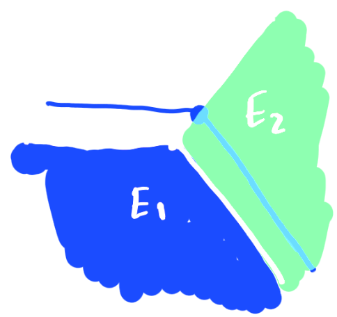
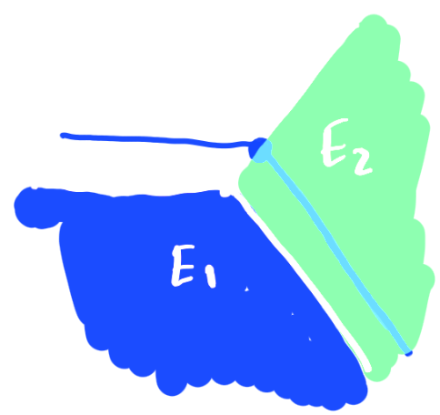

Minimal Planar Clusters
[E. Paolini: Università di Pisa]
Nancy ‐ December 8, 2021
An $N$-cluster is an $N$-uple: $$\mathbf{E} = (E_1,\dots, E_N)$$ with $E_i \subset \mathbb R^d$ and $\lvert E_i \cap E_j\rvert = 0$ when $i\neq j$.
The measure of $\mathbf E$ is an $N$-uple: $$ \lVert \mathbf E \rVert = (\lvert E_1\rvert, \dots, \lvert E_N\rvert) \in \mathbb R^N $$ The perimeter of $\mathbf E$ is a scalar: $$ P(\mathbf E) = \frac 1 2 \left( P(E_1) + \dots + P(E_N) + P(E_0) \right) $$ where $E_0$ is the external region of $\mathbf E$: $$ E_0 = \mathbb R^d \setminus (E_1\cup \dots \cup E_N). $$
A minimal cluster is a cluster $\mathbf E$ such that $$ P(\mathbf E) = \min \{P(\mathbf F)\colon \lVert \mathbf F\rVert = \lVert \mathbf E \rVert\} $$
Problem: given $\mathbf m\in \mathbb R^N$ find a minimal $N$-cluster $\mathbf E$ such that $\lVert \mathbf E\rVert = \mathbf m$
From now on we stick to the planar case: $d=2$, $E_1,\dots,E_N\subset \mathbb R^2$.
- $N=1$ is the isoperimetric problem
(Steiner 1842) - $N=2$ is the double-bubble
(Foisy & al. 1993) - $N=3$ is the triple-bubble
(Wichiramala 2004; Lawlor 2019) - $N=4$ and equal areas
(P. & Tamagnini 2018; P. & Tortorelli 2020) - $N=\infty$ with equal areas is the honeycomb
(Hales 1999)
homemade numerical simulation
paolini.github.io/jsbubble/
Existence
Given $\mathbf m\in \mathbb R^N_+$ there exists a minimal cluster $\mathbf E$ with $\lVert \mathbf E \rVert = \mathbf m$ [Almgren 1976]
Proof: concentration compactness. Almgren's Lemma.
Regularity (1)
- the regions of a minimal set are bounded by a finite network of circular arcs (or straight segments)
- the arcs meet in triple points with equal 120 degrees angles
- the signed curvatures of the arcs meeting in a triple point sum up to zero
Regularity (2)
- pressures $\mathbf p = (p_1, \dots, p_N)$ can be defined so that the curvature between regions $E_i$ and $E_j$ is $\kappa_{ij} = p_j - p_i$ (with $p_0=0$)
- pressures are Lagrange multipliers: if $\mathbf E = \mathbf E(t_0)$ is minimal one has: $$ \frac{d}{dt}_{|t=t_0} P(\mathbf E(t)) = \mathbf p \cdot \frac{d}{dt}_{|t=t_0} \lVert \mathbf E(t)\rVert $$ by homogeneity $P(\mathbf E) = 2\mathbf p \cdot \lVert \mathbf E\rVert$
Stationary clusters
We call stationary any cluster satisfying the previous regularity results.
Stationarity is preserved under isometries, dilations and circle inversions $z\mapsto \frac{1}{\bar z}$
$\to$Bumping results
If $\mathbf E$ is minimal:
- $\partial \mathbf E$ is connected and each region $E_i$ is simply connected
- Two different components can only share a single arc along the boundary
Open problem (1)
cluster conjecture: if $\mathbf E = (E_1, \dots, E_N)$ is a minimal cluster then each $E_k$ is a connected set.
Open problem (2)
We say that $\mathbf E$ is a weakly minimal cluster if $$ P(\mathbf E) = \min \{P(\mathbf F)\colon \lVert\mathbf F\rVert \ge \lVert \mathbf E \rVert\} $$ Is there a cluster which is minimal but not weakly minimal?
If the cluster $\mathbf E$ is minimal but not weakly minimal, there exists a weakly minimal set $\mathbf F$ such that $\lVert \mathbf F\rVert > \lVert \mathbf E\rVert$, $P(\mathbf F) < P(\mathbf E)$. Known: the regions of such $\mathbf F$ have a total of at least 7 connected components.
double-bubble
- remove empty chambers with weak minimizers
double-bubble
- remove leaves by rotating and bumping
double-bubble
- uniqueness by monotonicity
 

Triple bubble: monotonicity
For each triple of measures $\mathbf m = (m_1, m_2, m_3)$ there exists a unique (up to isometries) stationary cluster $\mathbf E$ such that $\lVert \mathbf E\rVert = \mathbf m$ and all three regions $E_1, E_2, E_3$ are connected. We call it standard triple bubble.
Also for triple bubble we have monotonicity. [Montesinos 1990]
Triple bubble: unified minimizers [Lawlor]
Let $\mathbf B(\mathbf m)$ be the standard triple bubble with measures $\mathbf m = (m_1, m_2, m_3)$.
The unified quotient of a cluster $\mathbf E$ is $$ \mu(\mathbf E) = \frac{P(\mathbf E)}{P(\mathbf B(\lVert \mathbf E\rVert))} $$
goal: prove that for every $3$-clusters $\mathbf E$ one has $$ \mu(\mathbf E) \ge 1 $$
existence of unified minimizers
There exists a $3$-cluster $\mathbf E$ such that $\mu(\mathbf E)$ is minimal.
goal: prove that $\mu(\mathbf E)=1$.
advantage: we have no more a constraint on the measure of $\mathbf E$.
mental picture...
Lemma 1.
If $\mathbf E$ is a unified minimizer
with
$\mu(\mathbf E)\le 1$ and
$\mathbf F$ is any cluster
one has:
$$
P(\mathbf E) - P(\mathbf F) \le
P(\mathbf B(\lVert \mathbf E\rVert)) - P(\mathbf B(\lVert \mathbf F \rVert))
$$
proof: $$ \begin{align*} P(\mathbf E) - P(\mathbf F) &= \mu(\mathbf E) P(\mathbf B(\mathbf E)) - \mu(\mathbf F) P(\mathbf B(\mathbf F)) \\ &\le \mu(\mathbf E) \big(P(\mathbf B(\mathbf E)) - P(\mathbf B(\mathbf F))\big)\\ &\le P(\mathbf B(\mathbf E)) - P(\mathbf B(\mathbf F)) \end{align*} $$
Lemma 2. If $r < R$ one has: $$ \begin{gather*} P(\mathbf B(a_1, a_2, \pi R^2)) - P(\mathbf B(a_1, a_2, \pi r^2))\\ < 2\pi R - 2\pi r \end{gather*} $$
Proof of Lemma 2. $$ \begin{gather*} \left[P(\mathbf B(a_1,a_2, \pi t^2))\right]_{t=r}^R = \int_{r}^R \frac{d}{dt} P(\mathbf B(a_1, a_2, \pi t^2)) \, dt \\ = \int_{r}^R p_3(t) \frac{d}{dt} (\pi t^2)\, dt = \int_{r}^R \frac{1}{R_3(t)} 2\pi t\, dt \\ < 2\pi \int_{r}^R \frac{1}{t} \cdot t\, dt = 2\pi (R - r) \end{gather*} $$
Lemma 36%, 64%. Let $\mathbf E = (E_1, E_2, E_3)$ be a unified minimizer with $\mu(\mathbf E)\le 1$. If $C$ is a connected component of $E_3$ then: $$ \lvert C \rvert > \frac{9}{25} \lvert E_3\rvert $$ moreover if $C$ is internal then: $$ \lvert C \rvert > \frac{16}{25} \lvert E_3\rvert $$
Proof.
$\lvert C\rvert=\pi \rho^2$.
Give $C$ to $E_0$, $E_1$ or $E_2$:
$\mathbf F = (E_1 \cup C, E_2, E_3\setminus C)$.
$$
\begin{align*}
P(\mathbf E) - P(\mathbf F)
&\ge \frac{P(C)}{3\text{ or } 2}
\ge \frac{2\pi \rho}{3\text{ or } 2}
\end{align*}
$$
$$ P(\mathbf E) - P(\mathbf F) < 2\pi R - 2\pi r $$ with $\pi R^2 = \lvert \mathbf E_3\rvert$, $\pi r^2 = \lvert \mathbf E_3\rvert - \lvert C\rvert = \pi R^2 -\pi \rho^2$ so $$ \frac{2\pi\rho}{3\text{ or }2} < 2\pi(R-\sqrt{R^2-\rho^2}) $$ $$ R^2 - \rho^2 < \left(R - \frac{\rho}{3 \text{ or }2}\right)^2 $$
$$ 2 R \frac{\rho}{3\text{ or }2} < \rho^2 + \frac{\rho^2}{9\text{ or }4} $$ $$ \dots $$ $$ \rho > \left(\frac{3}{5} \text{ or } \frac{4}{5} \right)R $$ $$ \pi \rho^2 > \left(\frac{9}{25} \text{ or } \frac{16}{25}\right) \pi R^2 $$
Since 36% + 64% = 100% and we have strict inequalities a disconnected region cannot have an internal component.
Since 36% + 36% + 36% > 100% a disconnected region has at most two components (both external)
Lemma 3: If $\mathbf E$ is a unified minimizer and $\kappa(E_i)$ is the curvature of an external edge, then $$ \kappa(E_i) = \mu(\mathbf E) \cdot \kappa (B_i) $$ where $B_i$ is the corresponding region of the standard bubble with same area.
Proof. $\mu(\mathbf E(t))$ is minimal if $\mathbf E(0)=\mathbf E$. $$ 0 = \left[\frac{d}{dt} \frac{P(\mathbf E(t))}{P(\mathbf B(\lVert \mathbf E(t) \rVert))}\right]_{t=0} \\ $$ $$ % \frac{\kappa(E_i)}{\kappa(B_i)} = \left[\frac{\frac{d}{dt}P(\mathbf E(t))}{\frac{d}{dt}P(\mathbf B(\lVert \mathbf E(t) \rVert))}\right]_{t=0} = \frac{P(\mathbf E)}{P(\mathbf B(\lVert \mathbf E \rVert))} = \mu(\mathbf E) $$ \end{gather*}
Lemma 4: If $C\subset E_1$ is a triangular external component of a unified minimizer $\mathbf E$ then $C=E_1$.
Proof: Let $\mathbf B= \mathbf B(\lVert \mathbf E\rVert)$. The three external curvatures of $\mathbf B$ coincide with $\mu=\mu(\mathbf E)$ times the curvatures of the regions of $\mathbf E$ by previous Lemma. So by taking a rescaling $\mathbf F = \frac 1 {\mu} \mathbf B$ we obtain that $F_1$ is isometric to $C$. But since $\mu\le 1$ \[ \lvert E_1\rvert = \lvert B_1\rvert = \mu^2 \cdot \lvert F_1\rvert \le \lvert C\rvert. \]
Only possibility remaining can be discarder by a symmetry argument